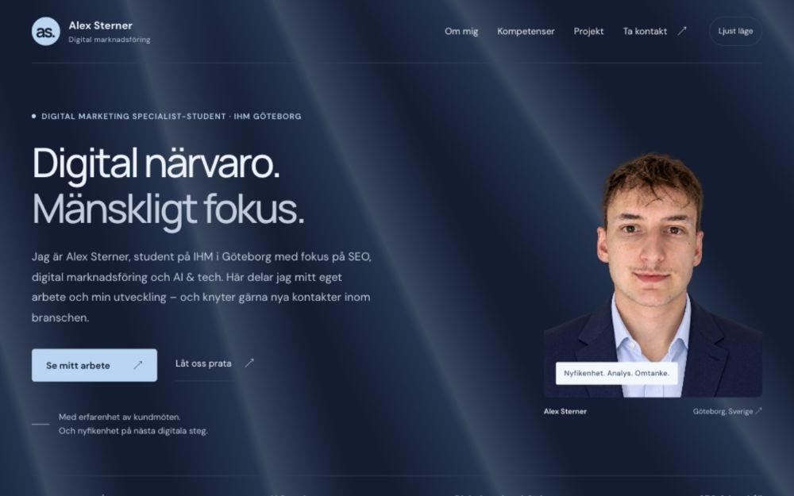

Eget projekt · Webb & innehåll
En portfolio som får växa
En personlig plats för att presentera min inriktning, samla det jag gör och göra det enkelt att ta kontakt.
- Min roll
- Innehåll, riktning och val av uttryck
- Genomförande
- HTML, CSS och JavaScript med AI som kodstöd
- Status
- Under löpande utveckling
- 01 / Problem
Göra min riktning tydlig
Hur kan jag visa vem jag är och vad jag vill utvecklas inom, på ett sätt som är lätt att ta till sig?
- 02 / Mitt arbete
Forma innehåll och uttryck
Jag har arbetat med sidans innehåll, struktur och visuella riktning. AI har hjälpt till att omsätta idéerna i kod.
- 03 / Leverans
En fungerande webbplats
Resultatet är sidan du besöker: en responsiv portfolio med projektdokumentation, temaväljare och direktkontakt via mejl och LinkedIn.
- 04 / Lärdom
Visa det som faktiskt finns
Konkreta exempel gör arbetet lättare att bedöma. Därför får webbplatsen och besluten bakom den ta plats medan portfolion växer.
AI & tech: kodstöd, beslut och kontroll
Jag utforskar AI och tech tillsammans genom att utveckla min webbplats. AI fungerar som kodstöd; jag sätter riktningen och väljer vilka förslag som passar min presentation.
Vad AI har hjälpt till med
Kodförslag för sidans HTML, CSS och JavaScript: layout, temaväxling och navigation. Det ger mig ett konkret resultat att granska och utveckla vidare.
Beslut i den här versionen
En tydlig studentroll i introduktionen, större text för detaljer och mer utrymme för det faktiska arbetet. Innehållet hålls till min egen portfolio och mina fokusområden.
Så kontrolleras resultatet
Layouten granskas på mobil och dator, i ljust och mörkt läge. Menylänkar, projektets utfällbara delar och tangentbordsnavigation kontrolleras i webbläsaren.
Webbplatsen visar hur jag arbetar med AI-stöd och fortsätter lära mig om webb, innehåll och tillgänglighet.
SEO i praktiken: sidtitel, beskrivning och struktur
Här är exempel från den här sidans SEO-grund. Titeln och beskrivningen kopplar presentationen till mitt namn, min utbildning och Göteborg.
- Sidtitel
- Alex Sterner | Digital Marketing Specialist-student, IHM
- Metabeskrivning
- Lär känna Alex Sterner, Digital Marketing Specialist-student på IHM i Göteborg. Utforska min portfolio, arbetet med webbplatsen och mina fokusområden.
- Rubrikstruktur
- En huvudrubrik för presentationen. Underrubriker för projekt, om mig, fokusområden och kontakt.
Fokus här är sidans innehåll och struktur. Synlighet i sökresultat behöver följas upp över tid.